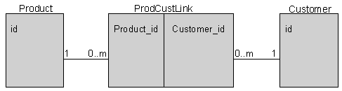

This topic describes support for queries in EJB 2.x CMP entity beans. For EJB 1.1 CMP entity beans, WebSphere Application Server provides extensions for finder support.
EJB 2.x provides a query syntax called EJB Query Language (EJB QL) for finder and select methods of CMP entity beans. Finder methods obtain one or more entity bean instances from a database, and are defined in the home interface.
The <query> element is used to define the query for the finder method in the deployment descriptor, for every finder method except findByPrimaryKey(key). Queries specified in the deployment descriptor are compiled into SQL during deployment. The syntax of the query is contained in the <ejb-ql> element of the <query> element:
<query> <query-method> <method-name></method-name> <method-params> <method-param></method-param> </method-params> </query-method> <result-type-mapping></result-type-mapping> <ejb-ql></ejb-ql> </query>
See Adding finder methods to EJB 2.x beans using EJB QL for more help.
For details on EJB QL, go to the WebSphere Application Server Information Center and search for the keywords "EJB QL".
There are three types of EJB custom finders that are currently supported and that can be used in combination:
For each finder method that is defined in the EJB home interface (other than findByPrimaryKey and those finder methods generated to support associations), one of the following query strings or declarations must be defined in the finder helper interface (in file beanClassNameFinderHelper.java):
Note that the return type java.util.Enumeration or java.util.Collection on the finder in the home interface indicates that this finder may return more than one bean. Using the remote interface as the return type indicates that a single bean is returned. This is true for all of the supported types of custom finders. The code generated into the persister handles this distinction.
It is important to note that if you are working with existing EJB 1.0 JAR files, you can continue to define SQL query strings or method declarations in the helper finder interface. (The SQL query string is actually a field on the interface describing the full SELECT statement or just the WHERE clause.) However, for any new development work that requires you to work with EJB JAR files at a level higher than 1.0, it is required that you use an extension document rather than the finder helper interface to define your queries and method declarations. This is discussed later in this topic.
Maintaining SQL compatibility across different databases
For SELECT, WHERE, and method custom finders, there may be situations where the finder methods access different databases. In this case, it is necessary to ensure that SQL compatibility is maintained across the different databases. For instance, it is possible that the SQL syntax used by each database is different. In these situations, use the SQL extensions defined by JDBC to resolve the database differences.
For example, assume that you are developing a CMP entity bean that requires a finder method that involves a timestamp/date field. Also assume that this bean will be deployed to DB2® and Oracle databases. The problem is that the format of the timestamp/date fields in DB2 and Oracle are different, which causes difficulties in defining one WHERE clause for use with both DB2 and Oracle. The solution to this particular problem is to use the SQL Escape sequence.
Additional information about SELECT, WHERE, and method custom finders is found in the following sections.
Note: when working with custom finders, do not pass NULL.
A SELECT custom finder is used to enter an entire select statement in the finder helper interface to define the SQL query.
The use of SELECT custom finders is supported for compatibility with earlier releases. Using SELECT custom finders is discouraged in this and future releases.
A custom finder in which you enter only the filtering WHERE clause into the finder helper interface is called a WHERE custom finder. For example, if you have a VAPGarage CMP entity bean that is mapped to a database table with a column named CAPACITY, the finder helper interface would look like this:
public interface VapGarageBeanFinderHelper {
public final static String
findCapacityGreaterThanWhereClause =
"T1.CAPACITY > ?";
}
Notice that any dependency on the shape of the results is removed from the string. Two dependencies still exist:
The name of the column would change only if you took action to change it.
The alias for the table will be the same from one generation to the next unless tables are added to or removed from the mapping. In single-table cases, this may not seem significant (the alias is always T1). When multiple tables are used, this is very important.
Any table references in your handwritten SQL code must match the table aliases set up in the genericFindSqlString field. This is declared in the enterprise bean's generated persister.
As in the SELECT custom form, the number of finder parameters must match the number of injection points (the ? characters) in the WHERE clause. Also, as in the SELECT form, the type of the parameter will be used to determine which java.sql.PreparedStatement set call will be used to inject each parameter. The parameter types must be compatible with the column types. If the type is an object type and the parameter is null, a setNull call will be used.
For example, the home interface may contain the following method:
public java.util.Enumeration findGreaterThan (int threshold) throws java.rmi.RemoteException, javax.ejb.FinderException;
In this finder helper interface, the WHERE custom finder is one of the forms that you can provide. For example (line broken for publication):
public static final String findGreaterThanWhereClause =
"T1.VALUE > ?";
Note, however, that if you have an SQL statement that contains no WHERE clause, such as SELECT * FROM MYTABLE, you should use a query string that always evaluates to true. For example:
public static final String findALLWhereClause = "1 = 1";
A custom finder in which you enter a method signature into the finder helper interface is called a method custom finder. It is the most flexible type of custom finder, but it requires more work on your part. Using the same garage example as before, the finder helper interface would look like this:
public interface VapGarageBeanFinderHelper {
public java.sql.PreparedStatement findCapacityGreaterThan(int threshold)
throws Exception;
}
Unlike the SELECT and WHERE forms, however, this is not enough for method custom finders. An implementation of this method is needed. You provide your implementation of the method in a class that follows these rules:
To finish off our example, the finder object would look like this.
/**
* Implementation class for methods in
* VapGarageBeanFinderHelper.
*/
public class VapGarageBeanFinderObject extends
com.ibm.vap.finders.VapEJSJDBCFinderObject implements
VapGarageBeanFinderHelper {
public java.sql.PreparedStatement
findCapacityGreaterThan(int threshold)
throws Exception {
PreparedStatement ps = null;
int mergeCount = getMergedWhereCount();
int columnCount = 1;
ps = getMergedPreparedStatement("T1.CAPACITY > ?");
for (int i=0; i<(columnCount*mergeCount); i=i+columnCount) {
ps.setInt(i+1, threshold);
}
return ps;
}
}
In the case of any method custom finder, the generated persister uses your implementation to create the PreparedStatement to be executed. The persister will execute the PreparedStatement and handle the results. The implementation needs help from the persister to make sure the result set for the query has the correct shape. The com.ibm.vap.finders.VapEJSJDBCFinderObject base class provides several important helper methods, some of which are shown in the above example. In the following table, the complete set of helper methods are listed and described:
| Method | Description |
|---|---|
| getMergedPreparedStatement | Takes a WHERE clause and returns a PreparedStatement with the WHERE clause merged into the appropriate places. The PreparedStatement will have the correct result set shape. |
| getMergedWhereCount | Returns the number of times the WHERE clause is merged into the PreparedStatement. This is needed to know how many times to inject your query parameters into the PreparedStatement. |
| getPreparedStatement | Takes a complete query string and returns a PreparedStatement. This can be used if for some reason you need to do your own WHERE clause merging. This should be a very rare case. The next two functions are provided to help in these extreme cases. |
| getGenericFindSqlString | Returns the query string into which WHERE clauses are merged. |
| getGenericFindInsertPoints | Returns an array of integers that defines the point or points in the getGenericFindSqlString returned query string at which the WHERE clause is merged. The first point in the array is the last point in the string. It is usually best to merge from the end of the query string since a merge at the end will not change the location of merges earlier in the string. The size of the array is the same as the value returned from getMergedWhereCount. |
This is a rather simple case that can better be handled by a WHERE custom finder. More complex examples are possible that a WHERE custom finder simply cannot handle. For example, suppose you want a finder that takes a more complex object and injects it into multiple columns in a WHERE clause. You would end up with a finder method that looks like this:
public java.sql.PreparedStatement
findWithComplexObject(BigObject big) throws Exception {
PreparedStatement ps = null;
int mergeCount = getMergedWhereCount();
int columnCount = 3;
int anInt = big.getAnInt();
String aString = big.getAString();
String aLongAsString =
com.ibm.vap.converters.VapStringToLongConverter.
singleton().dataFrom(big.getLongObject());
ps = getMergedPreparedStatement("(T1.ANINT > ?) AND
(T1.ASTRING = ?) AND (T2.ALONGSTR < ?)");
for (int i=0; i<(columnCount*mergeCount); i=i+columnCount) {
ps.setInt(i+1, anInt);
if (aString == null)
ps.setNull(1, java.sql.Types.VARCHAR);
else
ps.setString(i+2, aString);
if (aLongAsString == null)
ps.setNull(1, java.sql.Types.VARCHAR);
else
ps.setString(i+3, aLongAsString);
}
return ps;
}
Even more complex examples are possible. For example, an object could be passed that contains the WHERE clause (or instructions on how to create it) in addition to the data. Or, there could be multiple parameters, each representing different conditions in the WHERE clause.
Example: Complex method custom finder
Although associations are not created with the EJB deployment tool, the following example is a logical representation of how a many-to-many association could be accomplished using a complex method custom finder. The example involves a many-to-many association between Product and Customer beans, using an intermediary bean (ProdCustLink) and two 1:m associations:

You can write method custom finders to span the relationship in either direction with just one method call. For this example, consider one direction only: a finder in Customer that retrieves all Customer instances that are associated with a given product key.
Customer's home interface contains the appropriate method signature, as follows:
java.util.Enumeration findCustomersByProduct(prod.cust.code.ProductKey inKey) throws java.rmi.RemoteException, javax.ejb.FinderException;
Customer's finder helper interface contains the signature for the corresponding finder method:
public java.sql.PreparedStatement findCustomersByProduct(prod.cust.code.ProductKey inKey) throws Exception;
The finder object (CustomerBeanFinderObject) builds and caches the query string for the finder as well as implements the finder method.
public class CustomerBeanFinderObject
extends com.ibm.vap.finders.VapEJSJDBCFinderObject
implements CustomerBeanFinderHelper {
private String cachedFindCustomersByProductQueryString = null;
.
.
.
}
Through lazy initialization in the finder object, the accessor method for the query-string field builds up the query string by first merging the WHERE condition into the query template and then adding a reference to the intermediate table into the FROM clause.
The first half of the accessor method uses a genericFindInsertPoints array to locate and update each WHERE clause. Then, the second half of the method counts forward from the beginning of each FROM clause, inserts the reference to the intermediate table into the query string as needed, and updates the query-string field.
protected String getFindCustomersByProductQueryString() {
if (cachedFindCustomersByProductQueryString == null) {
// Do the WHERE first
// so that the genericFindInsertPoints are correct.
int i;
int[] genericFindInsertPoints = getGenericFindInsertPoints();
StringBuffer sb = new StringBuffer(getGenericFindSqlString());
for (i = 0; i < genericFindInsertPoints.length; i++) {
sb.insert(genericFindInsertPoints[i],
"(T1.id = T2.Customer_id) AND (T2.Product_id = ?)");
}
// Make sure to update every FROM clause.
String soFar = sb.toString();
int fromOffset = soFar.indexOf(" FROM ");
while (fromOffset != -1) {
sb.insert((fromOffset+5)," ProdCustLink T2, ");
soFar = sb.toString();
fromOffset = soFar.indexOf(" FROM ", (fromOffset+5));
}
cachedFindCustomersByProductQueryString = sb.toString();
}
return cachedFindCustomersByProductQueryString;
}
After this method call, the query string looks something like the following:
SELECT <columns> FROM ProdCustLink T2, CUSTOMER T1
WHERE((T1.id = T2.Customer_id) AND (T2.Product_id = ?))
Also in the finder object, the implemented finder uses the query string to create a PreparedStatement. Last but not least, the product ID value is added into each WHERE clause by using the superclass method getMergedWhereCount() in the iteration loop.
public java.sql.PreparedStatement
findCustomersByProduct(ProductKey inKey)
throws java.lang.Exception {
// Get the full query string and make a PreparedStatement.
java.sql.PreparedStatement ps =
getPreparedStatement(getFindCustomersByProductQueryString());
// Inject the product id parameter into each merged WHERE clause.
for (int i = 0; i > getMergedWhereCount(); i++) {
if (inKey != null)
ps.setInt(i+1, inKey.id);
else
ps.setNull(i+1, 4);
}
return ps;
}
Related tasks
Adding finder methods to EJB 2.x beans using EJB QL